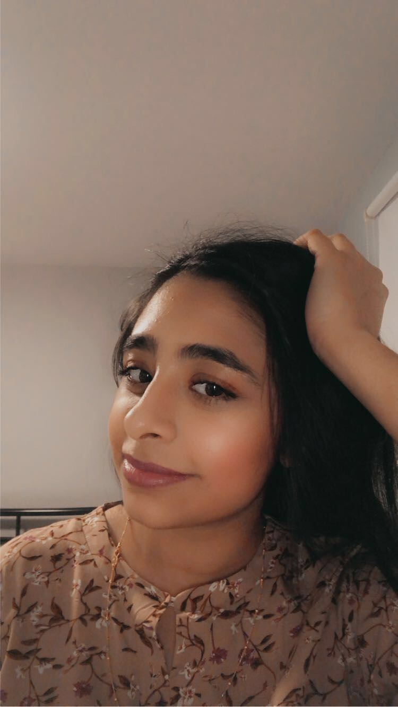

About Huma
I am an 18-year-old full-time college student enrolled in a three-year computer science program at Champlain College. I am the oldest in my family. My family consists of my parents, Muhammad Saeed and Riffat, my sister Muskan, and my brother Muhammad Arsalan. My first language is Urdu. Other than that I can speak Punjabi, English, and French fluently.
My Hobbies
Sports
I enjoy playing badminton with my family in our backyard during the summertime.
Spending time with my family
I love spending time with my family becuase I always have a good time no matter what. Some things I like to do with them are going shopping, cooking, cleaning, going to the beach in the summer and playing sports with them.
Listening to music
Listening to music is one of my favorite hobbies. I listen to all sorts of music because it makes me happy.
Travelling
I love to travel even though I don't do it that often. My family and I recently went to Tadoussac, Quebec and it was the most beutiful place ever! We went to Montmorency Falls, hiking, and whale-watching. I would like to travel to Dubai, Bali and Maldives one day as well as visit my family back in Pakistan very soon.
About Dahlia
Hi, my name is Dahlia James, and I'm 17 years old. My birthday is April 12th, 2003, and I was born in Longueuil. I graduated from Heritage Regional High School in 2020 and currently attend Champlain College, Saint-Lambert. I am in the Computer Science Technology program at Champlain.
My Interest & Hobbies
Reading
I like reading books, mostly fiction, when I have free time, especially during summer. Recently, I've gotten into reading more Stephen King, who predominantly writes the horror genre. One of my favorite books is "I'll Give You the Sun" by Jandy Nelson.
Music
Music is one of my favorite passtimes. I frequently listen to it, my favorite genres being: pop, alternative rock, indie, and show tunes. I recently purchased a guitar that I try to practice with every now and then.
Writing
Writing is a hobby that I don't get to practice as often as I want. I like brainstorming ideas and forming them into various stories. A dream of mine is to one day write a book.
Sports
I may no longer be in any sports teams, but I enjoy playing sports with my family members, including basketball, soccer, and swimming. If I had a chance, I would join a volleyball team.
Languages
I love to learn new languages and hope to know more than two new languages during my lifetime. I used to study Greek, then Spanish, but have not practiced lately. I've recently started to learn basic Japanese from a friend.